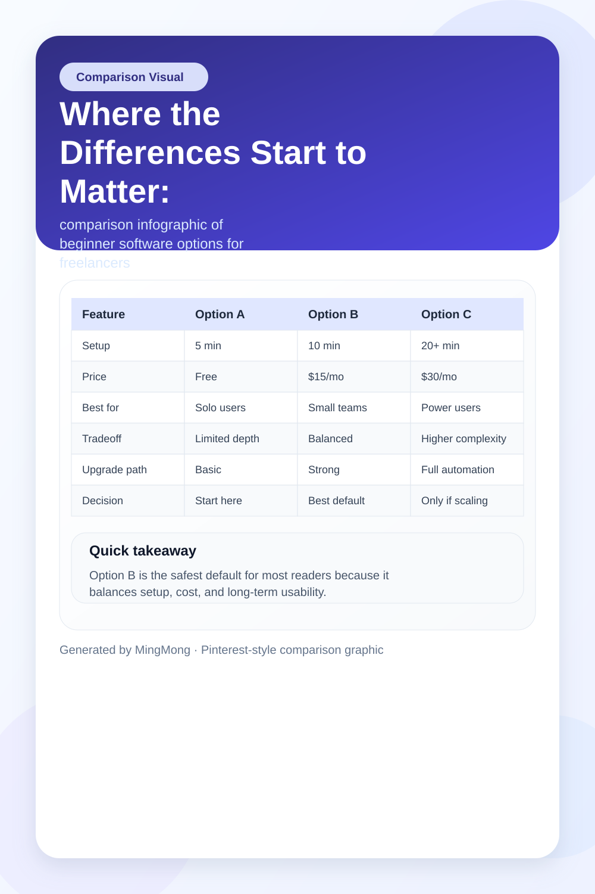
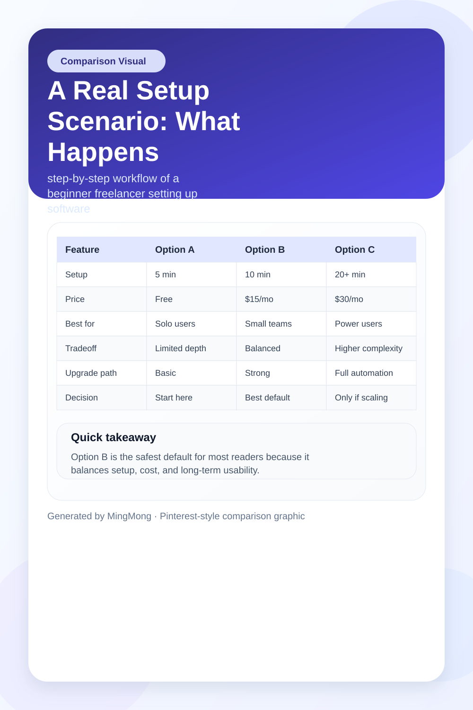
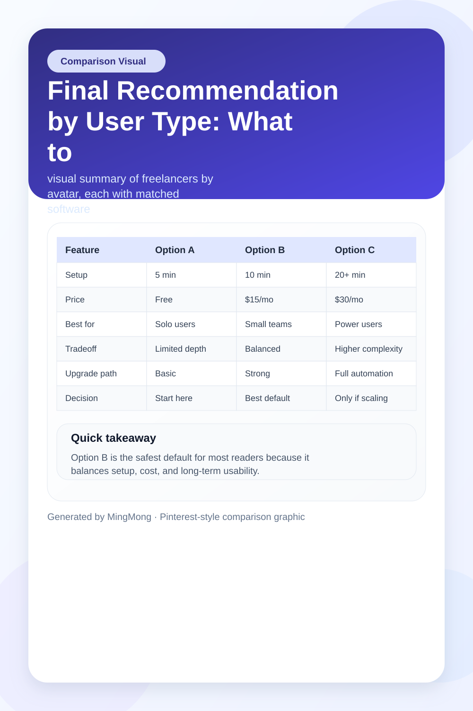

TL;DR
Start with Trello or Notion for tasks, Wave (US) or Zoho Invoice (EU) for billing, and Google Workspace as needed Don’t buy all-in-one suites before earning your first $1000—they’re overkill early on Review your real needs after 30 days—upgrade only when manual work adds up Designers should start with Trello; writers with Notion; coaches with Calendly Hidden costs and setup time matter more than fancy features
Quick Verdict: Where Beginners Should Actually Start
If you’re a freelancer just starting out, avoid the temptation to pick the most advanced software with every feature: it’s almost always a mistake that leads to lost time and hidden costs. The best software review framework for beginners is to start lean and focused.
Here’s a direct answer: For 90% of new US and EU freelancers, Trello or Notion wins for core project tracking, Wave wins for invoicing if you’re US-based (Zoho Invoice in the EU), and Google Workspace covers communication. Skip all-in-one suites; they look tempting but introduce complexity and setup delays you’ll regret.
Example: Many beginners spend days comparing Dubsado, HoneyBook, and Monday.com only to end up overwhelmed and paralyzed. In reality, you only need three tools with free plans to run your first month. Start there, then review after 30 days with receipts in hand. A tradeoff: FREE plans offer enough for a single client but can frustrate you once you start juggling three or more projects with different needs.
Who Each Option Is Actually For: Splitting User Types Early
Decision: Not all freelance workflows are built the same, and picking the wrong main tool is a beginner mistake.
Best for designers: Look at Trello or Asana for kanban-style project flow, plus Google Drive for asset sharing. If you need fast review or approval cycles, Notion is too general—the tradeoff is between quick visual task handling (Trello) and document granularity (Notion).
Best for writers: Notion excels at draft organization, version control, and easy sharing with clients. Upgrade to Grammarly when editing becomes a bottleneck. Scenario: Writers who use complicated PM tools often find themselves wasting 10+ hours per month on features they never use.
Best for consultants or coaches: Calendly integrates better with client scheduling and payments than project management apps. For these roles, the main weakness of all-in-one platforms is clunky onboarding for new clients who expect a streamlined booking flow.
Best for digital marketers: Asana or ClickUp ramps up only if you’re juggling multiple campaign layers. Otherwise, stick with Trello—its simplicity beats overkill setups every time.
What this looks like: In practice, many beginners try to fit their work into the first software they hear about, rather than something built for their job. Don’t be afraid to specialize your stack.
Where the Differences Start to Matter: Usability, Communication, and Workflow

Tradeoff: Not all free software is equal—feature walls hit fast. Usability and client communication are where each tool stands out or breaks down.
Setup difficulty: Trello, Notion, and Wave can all be up and running in under 60 minutes for a solo user (step: sign up, create a project or template, invite one client).
Best for simplicity: Trello and Wave. Main strength is their zero-cost entry and minimal training needed. Main weakness: As client volume increases past 3-4 at once, you’ll hit organizational headaches, especially with multiple revisions or shared files.
Pricing reality: Trello, Wave, and Zoho Invoice are genuinely free for solo starters. Notion stays free unless you want automation or team workflow (from $10/month). Asana offers limited free seats, but advanced project tracking costs after 30 days (around $10.99/month). Calendly’s free plan works until you need pooled calendars or payment collection ($8-12/month for upgrades).
Decision: If instant client response and communication are critical, Google Workspace (paid after 14-day trial at $6/month) or integrating Slack can pay for itself. The mistake here is trying to use invoicing tools for messaging—they never perform well.
Best free starting point: Trello for projects, Wave or Zoho Invoice for payments, Notion for organizing drafts or deliverables.
Best paid upgrade: Notion or Asana when you handle more than 5 clients and need automation.
Overkill: All-in-one suites like HoneyBook or Dubsado are built for professional studios, not for someone with fewer than 5 steady clients. The friction shows when setup takes more than a week.
Where this breaks down: Free plans often force manual follow-ups—after your third late invoice, you’ll see the limits.
A Real Setup Scenario: What Happens in Your First 30 Days

Scenario: Say you start freelancing today with just Trello for tasks, Notion for drafts, and Wave (or Zoho Invoice for EU) for billing. Here’s what your first 30 days might actually look like—along with a numbered step block:
Step 1: Day 1-2: Register and customize a Trello board (30 minutes), sign up for Wave/Zoho Invoice (15 minutes), and set up a Notion workspace (45 minutes).
Step 2: Day 3-7: Create your first client project, share task/checklist, and invite the client for instant feedback. Drafts and deliverables live in Notion. Test your workflow for revision rounds, organize assets, use comments in Notion or Trello. Send your first invoice using the billing tool.
Step 3: Day 8-21: As you onboard a second or third client, you’ll notice system strain. Free plans force you to manage notifications and remember to follow up manually. If you let project reminders slip, you risk delays or miscommunication—one late project is the classic mistake. Consider when to shift from free to paid tools.
Step 4: Day 22-30: Review what worked and what felt manual. Where do bottlenecks or missed follow-ups happen? If communication by email gets lost, that’s a sign to add Google Workspace or Slack.
Edge case: If a client needs a formal approval or multiple collaborators, both Trello and Notion hit feature walls and you feel the setup gap. After your first month, revisit the question: are you spending more time following up than planning real work?
Internal-link hook: For more details, see our article on upgrading your freelance workflow after your first 30 days.
Mistakes and Overkill Choices: Where Beginners Trip Up
The number one mistake: chasing software that promises to do everything, then getting paralyzed by onboarding and configuration. Decision fatigue often leads to the wrong purchase.
Tradeoff: While HoneyBook, Dubsado, and ClickUp market themselves as one-stop shops, their learning curve and dense interface create work rather than save it. In practice, solo freelancers with 1-2 clients end up duplicating data entry or forgetting to customize workflows, wasting hours.
Overkill: If your tool asks for legal entity setup, custom client portals, or automation templates before you’ve made your first $1000, it’s too much. Example: Several beginners buy lifetime deals to advanced PM suites only to discover invoicing isn’t supported for their region, or the client dashboard confuses their customers.
Where this breaks down: Even a $24/month suite is a tough ask if you haven’t billed a client yet. The hidden cost isn’t the subscription—it’s the weeks lost configuring features you’ll never use, or fixing mistakes when deadlines loom.
Scenario: After 14 days, schedule a sanity check—ask yourself if you’ve spent more time learning the tool or actually working for clients. If it’s the former, scale back. See also: beginner pitfalls in software setup.
Final Recommendation by User Type: What to Pick for Your First Year

A practical year-one stack is about minimizing regret, not just maximizing feature count. Decision: Pick the minimum number of tools you can get started with, then review in 30 days.
Best for project-based freelancers (designers, developers): Trello and Google Drive. If you begin hitting manual follow-up pain, revisit Asana or Notion at the 2-month mark.
Best for writers: Notion + Grammarly. When multiple editors or clients enter the picture, consider upgrading to a paid Notion plan for timeline and versioning.
Best for coaches, consultants: Calendly for appointments, Google Workspace for calls/emails. Wave or Zoho Invoice (EU) is enough for getting paid.
Best free plan for most: Start with Trello for 1-3 projects; Wave or Zoho covers billing. Review needs monthly—if lost time exceeds 3 hours/week on manual chase-ups, start researching upgrades.
Main mistake to avoid: Buying a suite (like Dubsado) before earning your first $1000 in client revenue—a premature decision that ties up cash and creates onboarding pain.
Internal-link hook: Interested in the pros and cons of all-in-one platforms after your first year? Check our deep dive on professional software upgrades for freelancers.
FAQ
What factors should I consider when choosing software as a freelancer?
Focus on client count, type of deliverable, and your actual workflow. Simplicity wins early on—track how much time you spend setting up vs. working. Evaluate whether you need features like client portals or advanced invoicing, or just easy project tracking. Prioritize free plans that won’t block you in your first 30 days, and always consider support and documentation.
Are there free software options available for beginners?
Yes. Trello, Notion (with some limits), Wave (US), and Zoho Invoice (EU) are free for small-scale use. Google Workspace offers a short trial but starts at $6/month, though many freelancers use the free tools until client need or revenue justifies an upgrade. Review needs monthly to avoid locking into paid plans too soon.
When should I upgrade from free to paid software?
Upgrade when you spend more than 3-5 hours per month on manual tasks, miss key deadlines due to software limits, or your client volume consistently exceeds what the free plans support (usually 3-5 concurrent projects or clients). Usually, this happens after your first two to three months of real client work.
What’s a common mistake freelancers make when picking software?
The biggest mistake is choosing all-in-one or premium software before you have a predictable workflow or revenue. Beginners often pay for advanced features they won’t use for months, causing confusion and wasted time. Start lean, review after 30 days, and only upgrade for specific needs that save you real hours.
Do I need separate software for client communication and project management?
In your first 1-2 months, combining email (like Gmail) for client chatting and Trello or Notion for projects works fine. As workload increases, you may need Slack or Google Workspace for streamlined messaging. Don’t confuse project management features with communication—keep them separate until your workflow requires integration.
This article is regularly reviewed for practical accuracy and updated when major software pricing, features, or user feedback changes.
Choose faster
Use this article to narrow the field then compare your top options by price, setup friction, and upgrade risk.
Search more articles
Find related tools, workflows, and guides.
Photo credits
- Photo 1: Dayne Topkin via Unsplash
- Photo 2: Jantine Doornbos via Unsplash
- Photo 5: Gus Ruballo via Unsplash